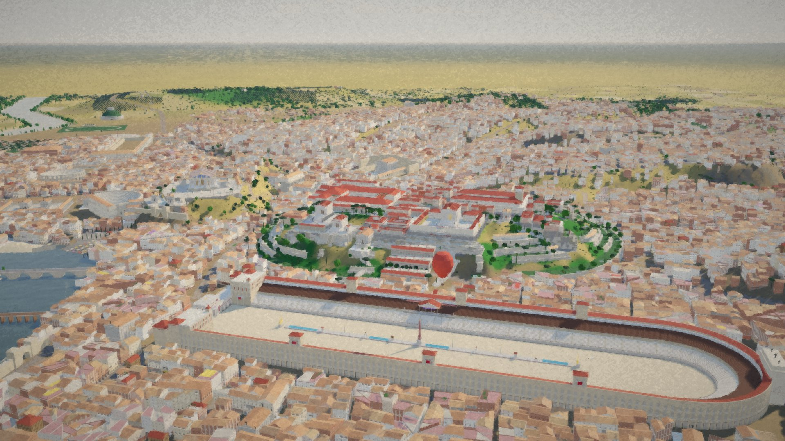

Ruilin Wang · PhD student in Computer Science · COMHIS group, University of Helsinki
Self-supervised models that find the same woodblock across 33 million scanned pages, and the public atlas that lets historians use them.
Open the live atlas ↗ What I built ↓
Ruilin Wang, Lidia Pivovarova, Yann Ryan, Enes Yılandiloğlu, Mikko Tolonen
Digital Humanities Quarterly 19(4), 2025
Traces headpiece reuse across ECCO and shows that variants of one design reveal networks of printers and publishers beyond one-to-one ownership.
doi:10.63744/s5tbtsghdxh2 · Data on Zenodo
Ruilin Wang, Lidia Pivovarova, Yann Ryan, Mikko Tolonen
Image Analysis (SCIA 2025), Lecture Notes in Computer Science, pp. 401–414, 2025
Groups ECCO headpieces with self-supervised plus supervised contrastive training; an adjusted augmentation pipeline and a semi-supervised fine-tuning step give 94% precision.
doi:10.1007/978-3-031-95911-0_28
A public atlas of 464,352 ornaments from 77,848 eighteenth-century books: browse by book, by human class and machine cluster, by printer and publisher, and upload an ornament to find its type.
A reading site for my 430k-character Chinese novel 《尼禄重工纪元》: the text on one side, a living 3D Rome (AD 54–68) behind it that changes with the plot as you scroll.
A reusable Claude skill that turns any novel into a chapter-synced 3D city: story bible, period filtering, reference-image scoring, procedural city fabric, hero buildings, lighting, reading UI, and a measured token ledger per stage.

I came to computer vision from language: a chatbot thesis, a literature minor, then a master’s on grouping book ornaments. My PhD sits where book history, computer vision and machine learning meet: training self-supervised models on a million ornaments cut from 33 million scanned pages, and turning what they find into tools historians can actually use. Off the clock I write a very long historical novel and build the city it is set in.
The small wolf wandering around this page is 瑞凌 (Ruiling), my original character. He keeps me company while I work. You can drag him.
About page →